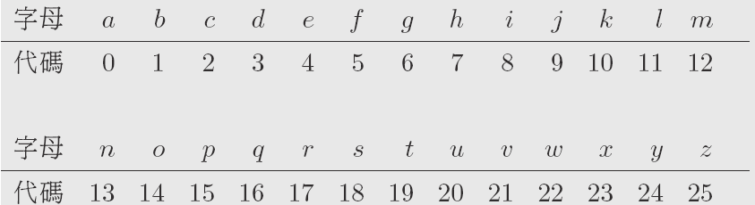
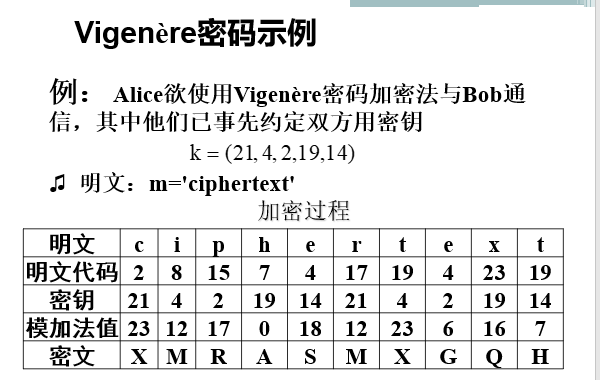
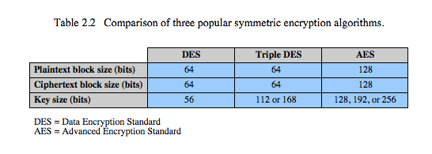
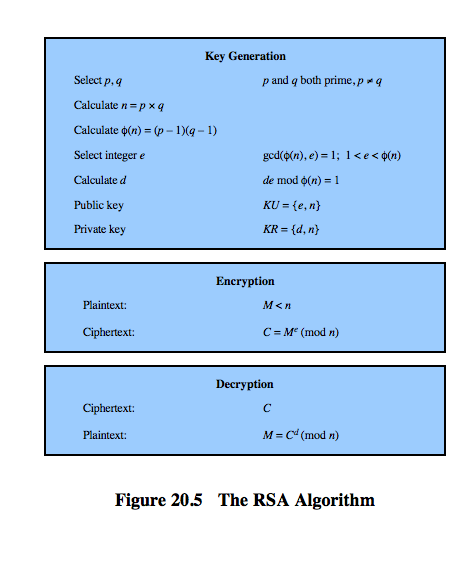
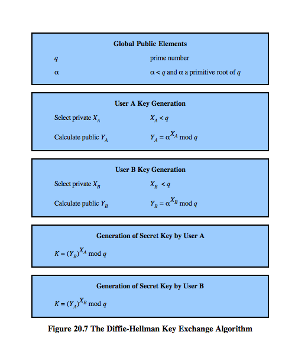
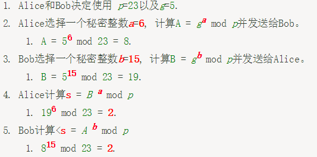
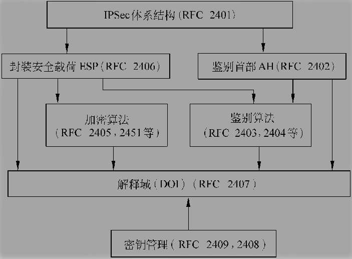
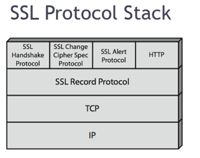
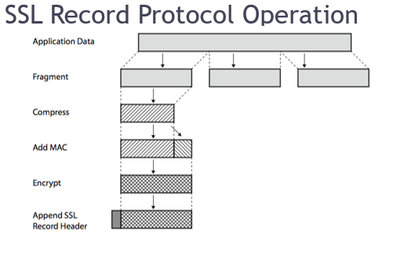
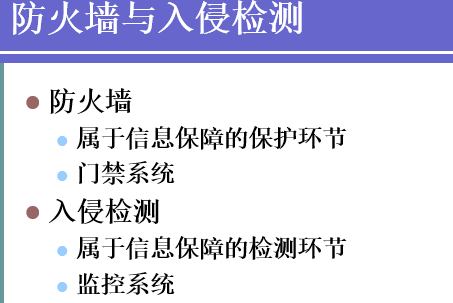

Security
一、 介绍
- 网络安全五个特征：
- 保密性：信息不泄露给非授权用户、实体或过程，或供其利用的特性。
- 完整性：数据未经授权不能进行改变的特性。即信息在存储或传输过程中保持不被修改、不被破坏和丢失的特性。
- 可用性：可被授权实体访问并按需求使用的特性。即当需要时能否存取所需网络安全解决措施的信息。例如网络环境下拒绝服务、破坏网络和有关系统的正常运行等都属于对可用性的攻击；
- 可控性：对信息的传播及内容具有控制能力。
- 不可否认性：出现的安全问题时提供依据与手段。
- 安全机制:
- 加密机制
- 数字签名机制
- 访问控制机制
- 数据完整性机制
- 认证交换机制
- 通信业务流填充
- 路由控制
- 公证机制
- 普遍性安全机制
- 网络攻击方法:
- 被动攻击
- 主动攻击
- 物理临近攻击
- 内部人员攻击
- 软硬件装配攻击
二、 古典加密技术
- 代替密码：明文中的每个字符被替换成密文中的另一个字符
- 凯撒码
- 
- 将明文转换为数字，使用加密函数E（m）=m+k(mod 26)得密文。解密函数D（c）=c-k(mod 26)。（只是字母简单的偏移）
- 维吉尼亚密码
- 密钥：一个字符串，对应一个数表
- 
- 暴力破解需要26的k次方
- 代替密码特点：
- 单字母代换密码 ：明文中字母的出现频度、重复字母的模式和字母相互之间的结合模式等统计特性不变，安全性差。
- 多字母代替密码 ：字符块被成组加密 ，有利于抗击统计分析。
- 凯撒码
- 置换密码：又称换位密码（transposition cipher） ，并没有改变明文字母，只改变了这些字母的出现顺序。
在对密文进行统计之后，易于判断该密文是否使用了置换密码加密方案。 - Kerckhoffs假设：假定密码分析者知道对方所使用的密码系统，包括明文的统计特性，加密体制（操作方式、处理方法和加/解密算法）、密钥空间及其统计特性。但是，不知道密钥。在设计一个密码系统时，目标是在Kerckhoffs假设的前提下实现安全。
- 密码分析方法：尝试发现明文或密钥的过程
- 唯密文攻击：知道部分密文试图恢复明文，并试图推算密钥
- 已知明文攻击：知道部分消息密文及对应明文，试图推导密钥或算法
- 选择明文攻击：事先选择部分明文让被攻击者加密，并得到相应密文，试图推导出密钥或算法。
- 选择密文攻击：密码分析者需要掌握的内容包括：加密算法、截获的部分密文、自己选择的密文消息以及相应的被解密的明文。密码分析者事先任意搜集一定数量的密文，让这些密文透过被攻击的加密算法解密，透过未知的密钥获得解密后的明文。由此能够计算出加密者的私钥或者分解模数，运用这些信息，攻击者可以恢复所有的明文。
- 维吉尼亚密码的密码分析
- 字母频率统计用于猜测
- Kasiski测试法确定密钥长度
- 重合指数法破译密文
三、 对称加密
- 分组密码的设计原则
- 混乱原则：密码设计应保证明文与密文之间的依赖关系足够复杂。
- 扩散原则：密码设计应保证密钥的每位数字能够影响密文中的多位数字（避免对密钥逐段破译），同时应保证明文的每位数字能够影响密文中的多位数字（隐藏明文的统计特性）。
- 分组密码特点
- 优点：易于标准化，易于实现同步
- 缺点：不善于隐藏明文的数据模式，对于重放、插入、删除等攻击方式的抵御能力不强。
- 对称加密算法：DES/AES
- 
- 分组密码工作模式
- ECB（Electronic Codebook）: 电码本
- 用相同的密钥分别对明文分组独立加密
- 对长明文不安全，因为重复的明文块在密文中也是重复的
- CBC（Cipher Block Chaining）：密文分组链接
- 加密算法的输入是上一个密文组和下一个明文组的异或
- 优点：能够隐蔽明文的数据模式；能够一定程度上防止分组的重放、插入和删除攻击。
- 缺点：易导致错误传播。任意一个明文或密文组出错会导致其后的密文分组出错。
- CFB（Cipher Feedback）:密文反馈
- 一次处理s位（明文和密文均是），加密算法的输入是上一块密文，加密后产生的伪随机数输出与明文异或作为下一单元的密文。
- 实质是一种自同步流密码
- 适用于必须按比特或字符对明文进行加密的情况
- OFB（Output Feedback）：输出反馈
- 与CFB类似，只是加密算法的输入是上一次加密算法的输出，且使用整个分组
- 优点：能够克服错误传播
- 缺点：很难发现密文被篡改；不具备自同步能力
- CTR计数器
- 每个明文分组都与一个经过加密的计数器相异或。对每个后续分组计数器递增
- 并行加密效率高
- ECB（Electronic Codebook）: 电码本
- 分组密码典型攻击方法
- 依据攻击者所掌握的信息：唯密文攻击、已知明文攻击、选择明文攻击
- 根据采用的技术方法
- 强力攻击（适用于任何分组密码算法）：穷尽密钥搜索、字典、查表、时间-存储权衡
- 差分密码分析
- 线性密码分析
- 差分-线性密码分析
- 攻击复杂度：数据复杂度（实施攻击所需输入的数据量）和处理复杂度（处理数据所需的计算量）。
- 对称密钥编码问题：通信密钥太多，管理与分发困难
四、 公钥加密
- RSA原理
- 
- 计算：(a x b) mod n = [(a mod n) x (b mod n)] mod n.
- RSA实现上的问题
在构造n时应选择p和q的长度相差不大 - RSA适合低频少量数据交换，如密钥分发；不适合数据量大，实时性强的场合（因为运算量大，慢）
五、 消息鉴别
- 概念：消息接收者对消息进行验证（真实性：确认并非假冒）（完整性：内容未被篡改）。
- 网络通信安全威胁：泄露、伪造、篡改、行为抵赖
- 鉴别与保密：鉴别不能自动提供保密性，保密性不能自动提供鉴别功能。
- 报文鉴别系统功能：鉴别算法（鉴别函数f产生鉴别码），鉴别协议，鉴别函数f是决定鉴别系统特性的主要因素。
- 鉴别函数分类：
- 以整个报文的密文作为鉴别符；
- 对称密钥加密：加密的同时提供保密和鉴别（强制明文具有某种结构）
- 附加报文鉴别结构：发送端：校验码C = f（M），密文X = Ek[M || C]; 接收端：Y = Dk(X) = [M’ || C’], 若f(M’) = C’,则报文可信。
- 公钥加密：提供报文鉴别和签名，不提供加密功能。
- 报文鉴别码(MAC)：核心是一个类似于加密的算法Ck()（k为密钥）, Ck(M)输出一个较短的定长数据分组也即MAC。发送[MAC || M]。接收端同样计算MAC，比较两个MAC是否相同。
PS：MAC与加密函数比较：MAC可以是单向的，而加密函数必须可逆；MAC算法不能提供保密性。 - 散列函数方式（采用一个公共散列函数，将任意长度的报文映射为一个定长的散列值，并以散列值作为鉴别符）。（常用SHA-3，MD5）
散列函数特性：- 输入任意大小数据块，输出定长
- 容易计算
- 单向性：对任意散列值h要找到一个M使得H(M) = h不可行。
- 弱抗冲突性：对任意给定M，要找到M’ != M,使得H(M)=H(M’)计算上不可行。该性质可防止伪造。
- 强抗冲突性：要找到两报文M和N使他们散列值相同不可行。该性质指出散列函数对“生日攻击”的抵抗能力。
- 以整个报文的密文作为鉴别符；
- 生日悖论攻击：伪造消息报文使hash值不变
- 中间符合攻击概念
六、 密钥建立和管理
- 密钥建立的模式：点到点（通信双方直接通信，分布式）；密钥分配中心KDC（用户与KDC有共享主密钥，KDC生成并分配会话密钥，集中式）；密钥转换中心KTC（只负责转发，集中式）
- Diff-Hellman密钥交换
- 
- 
- 如图，双方都计算出密钥为2
- 公钥加密体制的密钥分配：公钥的分配；使用公钥体制来分配对称密钥密码体制的密钥。
- 伪随机数生成器:线性同余算法；基于密码算法的随机数生成器（循环加密方式，DES的OFB模式）；BBS生成器；
- 密钥控制技术：密钥标签（DES的64位密钥中的8个校验位作为控制使用这一密钥的标签）；控制矢量
七、 用户认证
- 身份认证：密码，令牌（磁条卡，存储卡，智能卡），生物识别（虹膜，视网膜，指纹，签名，声音，脸）
- 口令破解：字典攻击，密码猜测，彩虹表攻击（可见密码不能明文存储，要求哈希后加salt，盐：随机字符）
- 口令的脆弱性：离线字典攻击；特定账户攻击；流行密码的攻击；单个用户的密码猜测；工作站劫持；电子监控；利用用户失误
- Bad Passwords:过短的密码；易猜测的密码
- Countermeasures：阻止未经授权访问密码文件；入侵检测措施；帐户锁定机制；自动工作站注销；加密的网络链接
八、 身份认证协议
- Kerberos身份认证协议：集中式的认证服务器结构，认证服务器的功能是实现用户与其访问的服务器间的相互鉴别；采用对称加密技术
- 数字签名：直接数字签名仅涉及通信双方
- 使用公钥算法进行数字签名
- 假定接收方知道发送方的公钥
- 发送方用私钥加密整个消息或者消息的散列码
- 接收方用公钥解密即可确认发送方的身份
- 公钥基础设施(PKI)
- 提供三种安全服务：
- 认证：身份认证，采用数字签名实现
- 完整性：数据完整性，采用数字签名或消息认证码
- 机密性：采用对称加密
- 包括：认证机构CA，证书库，证书撤销，密钥备份和恢复，自动密钥更新，密钥历史档案，交叉认证，时间戳…
- 提供三种安全服务：
- X.509认证服务：
- X.509协议实现基于公钥加密算法和数字签名技术
- 证书由CA创建，CA用其私钥对证书签名，用户可用CA的公钥验证证书有效性并提取被认证的用户的公钥
九、 互联网安全协议和标准
- IPSec:提供认证、保密性、密钥管理。优点：在传输层下，因而对应用程序、用户透明；抵抗旁路攻击；保护路由架构…
- IPSec架构：
- 
- IPv6强制，IPv4可选
- 安全关联SA：
- 发送方和接收方之间的单向的关系，为数据流提供安全保障
- 由三个参数定义：Security Parameters Index (SPI)；IP Destination Address；Security Protocol Identifier
- 有一个安全关联数据库（）
- SA管理：
- 创建：先协商SA参数，再更新SAD；可人工创建，也可动态创建
- 删除：有效期过期；密钥遭破坏；另一端要求删除该SA
- 认证头(AH)：
- 提供数据整合和IP包认证
- 有限地抗重播攻击
- 基于消息认证码（MAC）
- 重放攻击：攻击者发送一个目的主机已接收过的包，来达到欺骗系统的目的，主要用于身份认证过程，破坏认证的正确性。
- 抗重播服务：
- 序列号字段：创建一个新的SA时，发送者会将序列号计数器初始化为0； 每当在这一SA上发送一个数据包，序列号计数器的值就加1并将序列号字段设置成计数器的值； 当达到其最大值2³²-1时，就应建立一个新的SA。
- 一种滑动窗口机制：IP是无连接的、不可靠的 ，需设立窗口；窗口的最左端对应于窗口起始位置的数据包序列号N，则最右端对应于可以接收的合法分组的最高序号N+WindowSize-1
- ESP:提供保密性和抗重播服务
- 密钥管理:密钥生成和分发；AH和ESP各一对密钥；
- 安全套接层SSL：
- 
- 
- SSL的两个重要概念：
- SSL连接：
- 一个连接是一个提供一种合适类型服务的传输
- SSL连接是端对端的
- 连接是暂时的
- SSL会话：
- 一个SSL会话是在客户端和服务器之间的一个关联
- 会话由Handshake Protocal创建。会话定义了一组可供多个连接共享的加密安全参数
- 会话用以：避免为每一个连接提供新的安全参数所需的昂贵的谈判代价
- SSL连接：
十、 Hacking
- 攻击思路：信息收集，获取权限，安装后门（木马），扩大影响（攻击该网络其他主机），清除痕迹
- 安全评估
- TCSEC，CC
十一、 信息收集（选择题）
- Web与搜索引擎服务
- 目标：获取目标网络或公司的URL，获取目标网络的拓扑结构
- 扫描目的：查看目标网络中哪些主机是存活的，查看存活的主机运行了哪些服务，查看主机提供的服务有无漏洞
- IP扫描：判断目标网络有多少台主机存活（ping）（ping使用ICMP协议）
- 端口扫描：判断目标主机有哪些端口是打开的(TCP端口和UDP端口)（端口是入侵的通道）
- TCP扫描：TCP Connect，SYN，FIN
- UDP扫描
- 漏洞扫描
- 操作系统类型探测
十二、 缓冲区溢出
- 缓冲区：应用程序保存用户输入数据，程序临时数据的内存空间。缓冲区本质：数组。位置：堆、栈、数据段
- 溢出：用户输入数据长度超出了程序为其分配的内存空间，这些数据会覆盖其他程序数据的内存空间。
- 危害：程序异常，系统崩溃，程序跳到恶意代码，控制权被窃
- 溢出种类：堆溢出、栈溢出、整型溢出、格式化字符串溢出、其他溢出
- 溢出的共性：大对象向小对象复制数据，容纳不下造成溢出
- 避免缓冲区溢出漏洞：
- 人编写正确的代码
- 编译器进行数组边界检查
- 使用类型安全语言
- RunTime保护
- 操作系统
- 硬件
十三、 Web脚本攻击
- SQL注入攻击 ：把SQL命令插入到Web表单提交或输入域名或页面请求的查询字符串中，最终达到欺骗服务器执行恶意的SQL命令。
步骤- 绕过认证：conditions：账号密码的查询是同一条查询语句；密码没有加密保护
- 判断能否进行SQL注入
- 判断数据库类型及注入方法
- 猜测表名和字段名
- 猜测用户名和密码
- 预防
- 过滤关键字
- 限制输入长度
- 秘密字段使用散列函数保护
- XSS跨站脚本攻击：通过在链接中插入恶意代码就能盗取用户信息。
- 预防
- 对动态生成页面的字符进行编码
- 对输入进行过滤限制
- 对动态内容使用HTML和URL编码
- 设置浏览器不执行任何脚本下载
十四、 DOS攻击
- 概念：利用网络协议漏洞或其他系统以及应用软件的漏洞耗尽被攻击目标资源，使得被攻击目标无法正常提供服务，直至系统停止响应甚至崩溃的攻击方式。
- 原理：攻击者向服务器发送众多的带有虚假地址的请求，服务器发送回复信息后无限等待进而无法释放资源，连接超时后攻击者再度发送虚假请求。
- DOS分类：SYN Flood（请求方不发送ACK），ping of death（ping请求数据包声称超过64K，接收方TCP/IP堆栈崩溃），teardrop…
- 发现僵尸网络：IDS（提取僵尸程序指纹信息），行为监测（僵尸程序行为模式），蜜獾捕获（捕获僵尸程序样本）
十五、 恶意代码、病毒、蠕虫
- 计算机病毒：是一个指令序列，能够把自身拷贝插入到其他主程序中
- 病毒模块：引导、传染、表现
- 病毒按链接方式分类：
- 操作系统病毒：用自己的运行逻辑取代系统的正常逻辑模块
- 外壳型：将病毒本身包围在宿主程序周围，对原来程序不作修改
- 入侵型：将病毒插入攻击目标之中，一旦感染难以发现清除
- 源码病毒：利用java, VBS等网络语言编写放在e-mail附件或HTML主页中。
- 按传染对象分类：磁盘引导型（磁盘引导区），文件型（可执行文件），宏病毒（office系列）
- 检测病毒方法：
- 特征代码法：采样，提取特征代码，特征代码纳入病毒特征数据库，打开被检测文件检索，若出现新病毒重复1-3步
- 校验和法：在文件被感染前根据文件内容计算校验和保存在其他文件中。优点：既可发现已知病毒又可发现未知病毒；缺点：只能判断文件是否被修改，而不能识别病毒种类和名称，且对隐蔽性病毒无效。
- 行为监测法：利用病毒的特有行为来监测病毒的方法。
- 蠕虫：一种可以通过网络连接进行自身复制的程序，与以往病毒方式不同，文件型病毒、宏病毒需要在计算机的硬盘、软盘或文件系统中繁殖，而典型的蠕虫只会在内存中维持一个活动副本，甚至根本不向硬盘写入任何信息。
十六、 防火墙
- 概念：防火墙指应用于内部网络和外部网络之间的，用来保护内部网络免受非法访问和破坏的网络安全系统。
- 主要功能：
- 过滤进出网络的数据
- 防止不安全的协议和服务
- 管理进出网络的访问行为
- 记录通过防火墙的信息内容与活动
- 对网络攻击进行检测与告警
- 防止外部对内部网络信息的获取
- 提供与外部连接的集中管理
- 不能防范的攻击：内部威胁、病毒、应用程序漏洞、木马、社会工程、不当配置
- 防火墙分类：按实现技术（包过滤型（静态，动态），代理型（应用代理，电路代理，NAT））；按体系结构（双宿/多宿主机，屏蔽主机（双重保护安全性更高），屏蔽子网，混合结构）。
- 静态包过滤（传输层和网络层）：对包头内容进行简单过滤（源和目的IP，IP选项，IP上层协议，TCP和UDP源及目的端口，ICMP报文类型和代码）。
- 防火墙规则制定策略：a.拒绝任何访问，除非被规则特别允许。b.允许任何访问，除非规则特别禁止
- 过滤的两种基本方式：按服务过滤（如Telnet，SMTP，FTP等等）；按规则过滤。
- 静态包过滤的优缺点：速度快，价格低，对用户透明；配置难把握，防范能力低，没有用户身份验证机制。
- 动态包过滤（网络层）（状态检测防火墙）：不仅以一个数据包的内容作为过滤依据，还根据这个数据包在信息流位置加以判断
- 动态包过滤优缺点：基于应用程序信息验证一个包状态的能力，记录通过的每个包的详细信息；造成网络连接的迟滞，系统资源要求较高。
- 应用代理防火墙（应用层）：对所有规则内允许的应用程序作中转转发；牺牲了对应用程序的透明性。
- 应用代理优缺点：可以隐藏内部网络信息，具有强大的日志审核，实现内容过滤；价格高，速度慢，失效时造成网络瘫痪。
- 电路级代理（传输层）优缺点：隐藏内部网络信息，配置简单（无需为每个应用程序配置一个代理）；多数电路级网关都是基于TCP端口配置，不对数据包检测可能会有漏洞。
- NAT优缺点：管理方便并且节约IP地址资源，隐藏内部IP地址信息；外部应用程序不能方便地与NAT网关后的应用程序联系。-
- 理解防火墙的四种体系结构
十七、 入侵检测IDS
- 由于防火墙无法发现和阻止:a.对合法服务的攻击。b.源自其他入口的攻击。c.来自内部网络的攻击。d.来自木马的威胁。入侵检测技术通过对计算机网络或计算机系统中若干关键点信息的收集和分析，从中发现网络或系统中是否有违反安全策略行为和被攻击迹象的一种安全技术。
- 
- IDS任务：从系统正常运行产生的和攻击者进行攻击时产生的混合数据中找出入侵痕迹。
- 通用入侵检测框架CIDF：体系结构；组件通信（事件产生器（数据获取）；事件分析器（数据分析）；事件数据库（数据管理）；响应单元（行为响应））；语言规范；编程接口。
- 小结：入侵检测技术收集主机日志及网络流量等信息，通过模式匹配、统计分析或完整性分析，能够有效发现入侵行为。入侵检测形成了网络的纵深防御，成为防火墙技术的有益补充。网络技术的发展给入侵检测带来各种新的困难，同时也带来机遇。